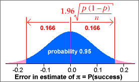

| error = p − π ~ normal (0, | ) |
95% bounds on the estimation error
When sample proportion p is used to estimate a corresponding population proportion, π, the resulting error has the approximate distribution,
| error = p − π ~ normal (0, | ) |
Replacing π by our best estimate, p , and using the properties of the normal distribution,
| Prob( error is between ± 1.96 | ) ≈ 0.95 |
95% confidence interval
A 95% confidence interval for π is therefore...
| -1.96 | to 1.96 |
Example
In a random sample of n = 210 values, there were x = 107 successes. We estimate the population proportion, π, with p = 107/210 = 0.510. The approximate normal distribution for the errors is shown below.

A 95% confidence interval for π is therefore
0.510 ± 0.069
i.e. 0.441 to 0.579
We are therefore 95% confident that the population proportion of successes is between 44% and 58%.